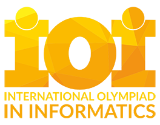

Maratona de Programação
Promoção do acesso à informação e cultura por meio da informática, promover a inclusão digital, incentivar a pesquisa e o ensino em computação no Brasil.
SBC
Sociedade Brasileira de Computação
As maratonas de programação são uma excelente forma de impulsionar sua carreira, desenvolver novas habilidades e se conectar com a comunidade tech. Se você busca um ambiente estimulante e desafiador, não perca a oportunidade de participar desse tipo de evento. Desperte sua criatividade e venha fazer parte dessa revolução digital!
A Maratona de Programação é um evento da Sociedade Brasileira de Computação que existe desde o ano de 1996. A Maratona nasceu das competições regionais classificatórias para as finais mundiais do concurso de programação, o International Collegiate Programming Contest, e é parte da regional sul-americana do concurso.
As competições são inspiradas em eventos internacionais, como a ACM ICPC, e oferecem um ambiente desafiador e competitivo. Os participantes têm a oportunidade de resolver problemas de algoritmos, estruturas de dados e raciocínio lógico em um tempo limitado. Essa experiência não só aprimora as habilidades dos competidores, mas também promove a troca de experiências e a formação de redes de contatos entre estudantes de diferentes regiões do país.
Várias universidades do Brasil desenvolvem concursos locais para escolher os melhores times para participar da Maratona de Programação. Estes times competem na Maratona onde os melhores serão selecionados para participar das Finais Mundiais do evento. Nos últimos anos, o evento reuniu participantes de mais de 100 países, 3500 universidades e 75.000 competidores, coaches e voluntários. Na América Latina, já se teve mais de 100.000 participações de estudantes na regional, dos quais, aproximadamente um terço são brasileiros.
Além disso, a Maratona da SBC é uma excelente vitrine para os talentos emergentes da tecnologia, atraindo a atenção de empresas em busca de novos profissionais. A participação nesse tipo de evento pode abrir portas e oportunidades no mercado de trabalho, uma vez que muitas empresas valorizam a experiência adquirida em competições desse tipo.
Descrição
A Maratona de Programação é um evento da Sociedade Brasileira de Computação que existe desde o ano de 1996. Nasceu das competições regionais classificatórias para as etapas mundiais da competição de programação, o International Collegiate Programming Contest, e é parte da super-regional latino-americana do evento.
Público-alvo
Ela se destina a alunos e alunas de cursos de graduação e início de pós-graduação na área de Computação e afins (Ciência da Computação, Engenharia de Computação, Sistemas de Informação, Matemática, etc.), buscando promover a criatividade, a capacidade de trabalho em equipe, a busca de novas soluções de software e a habilidade de resolver problemas sob pressão.
Organização
Os times são compostos por três estudantes, que tentarão resolver durante cinco horas o maior número possível dos dez ou mais problemas fornecidos. Eles têm à sua disposição apenas um computador e material impresso (livros, listagens, manuais, etc.) para vencer a batalha contra o relógio.
Onde Surgiu a Primeira Maratona de Programação?
A primeira maratona mundial nasceu dentro da Universidade Baylor, localizada nos Estados Unidos da América. A ACM International Collegiate Programming Contest ou ICPCe tem sua raíz em uma competição sediada na Universidade A&M do Texas em 1970. A atual estrutura da competição mundial iníciou em 1977 quando foram incluído equipas dos EUA e Canadá. Em 1989, a competição passa a ser sediada na Universidade Baylor.
Universidade Baylor
A universidade Baylor é uma universade privada batista localizada em Waco - Texas, Estados Unidos da América.
ACM - Association for Computing Machinery
Associação para Maquinaria da Computação foi fundada em 1947 como a primeira sociedade científica e educacional dedicada à computação. Contém aproximadamente 78.000 membro, e sua sede situa-se em Nova Iorque.
Principais Diferenças
A primeira edição da ACM ICPC realizada em 1970 na Texa A&M University, e as edições mais recentes da competição têm várias diferenças importantes, refletindo a evolução tecnológica, o crescimento da popularidade e a escala global do evento.
Antigamente
- A primeira competição foi regional com número limitado de participantes. A estrutura era focada em times pequeno e geralmente de universidades próximas.
- Na primeira edição, os computadores eram mais limitados. O hardware disponível era rudimentar e a maioria das soluções envolvia linguagens como Fortran ou Assembly.
- O formato era mais simples, com menos problemas a serem resolvidos e um número reduzido de equipes. A estrutura era mais voltada para uma maratona local, sem a complexidade do atual evento global.
- O evento não tinha a visibilidade nem a cobertura que tem hoje. O evento era mais restrito ao público acadêmico e local.
- Os problemas eram menos variados e complexos, refletindo o estudo da computação na época, que estava mais focada em processamento de dados e cálculo numérico.
- A primeira edição foi uma competição regional, sem a escala de finais mundiais
Atualmente
- Hoje, a ACM ICPC é uma competição global, com mais de 50.000 estudantes de 3.000 universidades em cerca de 111 países competindo nas etapas regionais, com os melhores avançando para as finais mundiais.
- Nas edições mais recentes, os competidores têm acesso a computadores modernos com uma variedade de ambientes de desenvolvimento, IDEs, e ferramentas de depuração. As linguagens mais usadas são C++, Java e Python.
- A competição atual dura cinco horas, com equipes enfrentando 8 a 12 problemas complexos. As soluções precisam ser precisas, e há penalidades por tentativas incorretas.
- As finais mundiais são transmitidas globalmente pela internet, com patrocinadores importantes como IBM e JetBrains.
- Os problemas atuais são extramamente desafiadores, cobrindo áreas como teoria dos grafos, geometria computacional, algoritmos de otimização e teoria dos números, e exige um domínio profundo de técnicas avançadas de programação.
- As finais mundiais ocorrem em locais de prestígio, como Moscou, Tóquio ou Porto, com as melhores equipes de todo o mundo competindo pelo título. A final mundial tem status "Olímpiada da Programação" e atrais as universidades mais renomadas.
Últimos vencedores
The 2023 World Champions
National Research University Higher School of Economics
Aleksander Babin, Participante
Kirill Kudriashov,Participante
Fedor Romashov, Participante
Mikhail Gustokashin, Coach
Philipp Gribov, Co-coach
The 2022 World Champions
Peking University
Guojie Luo, Participante
Lingyu Jiang,Participante
Yuxiang Luo, Participante
Zhanpeng Wang, Coach

The 2021 World Champions
Massachusetts Institute of Technology
Xiao Mao, Participante
Mingyang Deng,Participante
Jerry Mao, Participante
Ce Jin, Coach
Yinzhan Zu, Co-coach
| Títulos | Universidade | País |
|---|---|---|
| 3 | Universidade de Stanford | |
| 3 | Universidade de São Petesburgo de Tecnologia da informação. Mecânica e Ótica | |
| 2 | Instituto de Tecnologia da Califórnia | |
| 2 | Universidade de São Petesburgo | |
| 2 | Universidade Jiao Tong de Xangai |  |
| 2 | Universidade de Varsóvia | 
|
| 2 | Universidade de Waterloo |  |
| 2 | Universidade de Washington em St. Louis |
| Títulos | País | |
|---|---|---|
| 17 | Estados Unidos da América | |
| 6 | Rússia | |
| 2 | China | |
| 2 | Canadá | |
| 2 | Polônia |
|
| 1 | Austrália | 
|
| 1 | República Tcheca | |
| 1 | Alemanha | |
Portfólio
Cadastro de Equipes
Preencha as informações da equipe para participar da Maratona de Programação.
Dicas para Maratona
Está interessado(a) em participar? Saiba agora em detalhes e dicas importantes que podem te ajudar a ter um desempenho maravilhoso nessa maratona!
Como devo me preparar? O que preciso saber de antes de participar?
Veja agora dicas para impulsionar sua performance! Saiba de antecedência como estar pronto para esses desafios.
Como todos nós sabemos, maratonas de programação, — ou também conhecidas como hackathons — assim como qualquer outra, exige um esforço árduo da sua parte, e uma determinação para ultrapassar os desafios, resolvendo algoritmos e diferentes estilos de problemas! Continue lendo nosso artigo para mais informações de desempenho, aposto que isso irá alavancar sua pontuação!
Primeiro, e não menos importante, se certifique de checar todas as informações antes de se inscrever para sua maratona, você não quer perder tempo durante só por não ter lido todas as regras, certo? Cada maratona conta com suas regras e condições, então, primeiramente se certifique de não perder nenhuma! Por exemplo, várias delas são proibidas o uso de celulares, computadores, eletrônicos em geral, cadernos e livros, sendo somente lápis e caneta e o seu conhecimento, sem pesquisa alguma. Em outros, podem deixar utilizar o notebook do local escolhido, ou podem ser atividades em grupo ou individuais. Cada maratona é diferente e única, então, certifique-se de ler todas as informações dela para não ser surpreendido(a) no dia!
Outro ponto importante, é o seu descanso. Pois, sem um descanso adequado, você não terá seu desempenho essencial para a maratona! Tenha certeza de ter uma boa noite de sono, um café da manhã bem preparado, ou até mesmo um almoço nutritivo, lembre-se de beber muita água e de revisar seus conteúdos para antes da maratona. Se manter hidratado, e uma alimentação leve pode te ajudar a manter uma concentração melhor na hora! Também cheque sobre as regras da maratona quanto à comida, sejam doces, bolachas, salgadinhos, bebidas como água, sucos, cafés, refrigerantes. Dependendo da maratona escolhida, eles podem permitir que você leve algo para não decair suas forças! Muito provavelmente, em um pacote lacrado, e sem velcro para impedir trapaças. Então se certifique de estar dentro das regras, para não perder seus alimentos ou tempo!
Esteja preparado para essa maratona, mesmo que seja impossível sabermos tudo, é necessário que você tenha estudado muito! Tenha treinado códigos, algoritmos, soluções, para que na hora você não seja surpreendido em resoluções que não saiba como fazer. O hábito de estudo não é aplicado somente na maratona ou na programação, mas em qualquer área da sua vida, então é crucial que continue praticando até mesmo após essa maratona, para que não perca o hábito de aprender, e nem seja preguiçoso, afinal, programar é difícil assim como cada área, mas sem esse hábito, deixará bem mais difícil do que deveria. Com hábitos de estudo para programar, nosso cérebro ganha mais agilidade mental, não somente para competição, mas em tudo que se está estudando e treinando. Use sites como Beecrowd para treinar e solucionar problemas, pesquise problemas em sites com resoluções, treine, veja vídeos, veja aulas, estude estruturas e algoritmos fundamentais para estar preparado.
Tenha seu mental em dia! Claro, há momentos em que não estamos bem, e a vida adulta pode ser desafiadora na maioria dos casos. Mas estar com a cabeça limpa, também é um ponto muito importante a se considerar quando estiver indo para a maratona! Esteja preparado para situações de estresse que podem sair do seu controle, e foque em manter a calma para poder solucionar seus problemas e pensar com clareza, a calma pode ser sua amiga principal nesse momento, pois se você se deixar levar pelo estresse e descontentamento, seu desempenho e foco com certeza irá cair. Faça exercícios de respiração para manter a tranquilidade, se alongue um pouco e mexa seu corpo, ou se isso for da sua preferência, pode fazer uma pequena meditação, feche os olhos e respire fundo. Faça pausas para somente respirar por alguns minutos, e faça reajustes na sua forma de pensar, para que esteja com a cabeça limpa e preparada.
Possua confiança nas suas habilidades, aquelas que você sabe que trabalhou duro para obter, e também nos seus conhecimentoss aprendidos na faculdade, trabalho, e em estudos. Mesmo que a maratona seja difícil e isso faça você ter um pouco de insegurança, lembre-se sempre que você é capaz, e confie nas suas experiências e conhecimentos. Nem sempre saberemos tudo, como já havia dito anteriormente, mas não se deixe ser pessimista! Cada experiência nova, é um novo aprendizado. E independente da resolução e pontuação na maratona, você estará acima de tudo, aprendendo! Mas também mostrará o quão você se esforçou e foi determinado nela. Nunca desista de aprender, e use isso ao seu favor, veja códigos de outros participantes, veja resoluções diferentes, converse com professores e orientadores, você estará no caminho certo.
Caso na maratona que você estiver escolhido, seja em grupos, esteja preparado para chamar amigos, ou pessoas que você sabe que são esforçadas! Só de saber que elas estão determinadas tanto quanto você, isso é um ponto crucial para o trabalho em equipe, tenham certeza de suas escolhas. Tenham organização e dividam tarefas na hora da maratona, para não sobrecarregar todos, conversem tranquilos e evitem discussões e estresse! Afinal, vocês precisam estar calmos para poder executar suas funções de maneira correta. Dividam o trabalho, separem tópicos, e se comuniquem em cada caso e erro, essa é a chave.
Já, se a maratona for individual, não há muitas diferenças quanto a em grupo. Você mesmo sendo o autor de tudo, separe também suas tarefas, divida como fará cada parte com cuidado e excelência, isso ajuda na organização e na eficiência de seu código. Também irá economizar tempo, tente fazer esboços (escritos, desenhados, da sua preferência), de como você pode fazer o seu programa, escrevendo pontos importantes e relevantes, escolhendo os métodos mais eficientes para você, e foque no problema em si! Otimização é excelente, mas tudo que é em excesso, pode atrapalhar. Tenha sua mente focada no problema, e também não se desvie do foco. Não se esqueça de manter a calma sempre, e se houver erros, volte depois para arrumá-los, nem sempre as soluções serão instantâneas, e você não pode perder tempo nesses momentos! Otimize seu tempo, e isso fará você estar a frente dos outros.
E por último, e mais importante. Desejo a você, estudante, uma ótima maratona, lembre-se das dicas passadas nesse artigo, e sempre mantenha a calma e o foco! Não se deixe levar por palavras de terceiros, e confie em si mesmo. Você é o seu pilar, e sua própria inspiração, não se perca. Apenas você sabe do seu próprio esforço, e o quanto você deu o melhor de si; apenas você é ciente de como agiu, e só você pode julgar a si mesmo, confie mais em você. Espero que as dicas sejam úteis para sua maratona! Dê seu melhor, plante hoje as sementes do seu futuro, e colherá amanhã os frutos do que semeou.
Tempo
Fique de olho no tempo dado para a maratona, não se atrase. Saiba as restrições e trabalhe para ter uma solução eficiente a tempo!
Revisão
Revise seu código, quantas vezes forem necessárias para maior certeza antes de entregá-lo! Evite bugs, dos mais simples que sejam, até o mais díficil. Faça testes de mesa para diminuir os erros e manusear melhor seu programa.
Cuidado
Mantenha a calma, e o seu cuidado mental, faça pequenas pausas se necessário, e se alimente para manter as forças. Uma mente calma e descansada, é uma mente tranquila e ágil.
Maratona InterFatecs

A Maratona de Programação InterFatecs é um evento anual promovido pelas Fatec - Faculdades de Tecnologia do Estado de São Paulo e o CPS - Centro Estadual de Educação Tecnológica Paula Souza que reúne estudantes e docentes das várias Fatecs que oferecem cursos na área de Informática. Trata-se de uma competição disputada em equipes que envolve a resolução de problemas por meio do projeto e implementação de algoritmos computacionais. O evento é inspirado na Maratona de Programação promovida anualmente pela Sociedade Brasileira de Computação (SBC) como etapa seletiva do ACM-ICPC, competição mundial de projeto e implementação de algoritmos computacionais.
Objetivos
A competição possui como objetivos principais o aprimoramento dos estudantes nas técnicas de projeto e implementação de algoritmos, o desenvolvimento da sua capacidade de trabalho em equipe e também o estímulo ao uso da criatividade e do aperfeiçoamento na habilidade de resolver problemas sob pressão.
Quais linguagens usar?
As equipes podem enviar suas soluções em C, C++, Java ou Python.
Quantos alunos cada equipe deve ter?
As equipes são formadas por três (3) alunos titulares e opcionalmente um (1) reserva, que deverá participar do evento apenas no caso da ausência de um dos titulares.
Sites para treinamento
Existem diversos sites com problemas de competições brasileiras e internacionais, nos quais você pode cadastrar um usuário e submeter soluções: Beecrowd, SPOJ Brasil, Site da Maratona Brasileira de Programação.
Formato
A Maratona InterFatecs terá duas etapas, sendo a 1ª distribuída entre as unidades e a 2ª etapa presencial. Em ambas as etapas será utilizado o ambiente de gerenciamento de competição denominado BOCA, que é tradicionalmente empregado em competições do tipo no Brasil. Um ambiente que recebe os exercícios e faz a correção automática comandada pelos juízes da competição.
1ª Etapa: Realizada de forma distribuída, com as equipes espalhadas por diversas unidades Fatec, todas realizando a mesma prova, ao mesmo tempo. Para facilitar a organização, um único servidor é configurado em uma sede central à qual todas as unidades acessam pela rede mundial de computadores e onde os juízes da competição julgam as submissões e atendem as dúvidas dos participantes.
2ª Etapa: Realizada na Fatec Bragança Paulista, com a presença das equipes melhor classificadas na etapa anterior. Nessa sede, é disponibilizado o servidor com o ambiente interativo de submissão de programas e o corpo de juízes, reproduzindo inteiramente o ambiente de uma sede regional da Maratona de Programação da SBC.
A Maratona é um evento que dura um dia inteiro, começando com o credenciamento por volta das 9h da manhã. Um aquecimento das equipes das 10h às 11h da manhã, para testar as máquinas e o ambiente. A prova ocorre no horário da tarde, das 13h às 18h (duração de 5 horas), com resultado sendo divulgado às 18h30. Para resolver as questões, poderão utilizar as linguagens de programação C, C++, Java ou Python. Para equidade entre as equipes durante a implementação dos programas, as equipes não poderão fazer uso de material armazenado em meio digital.
O time que conseguir resolver o maior número de problemas é declarado vencedor.
Código de Conduta e Regras
Acesse nosso código de conduta e saiba mais sobre nossas regras: Conduta Regras
MARATONA IOI
International Olympiad in Informatics
A IOI (International Olympiad in Informatics) é a principal e mais prestigiada competição de Informática. Nela, os países participam com equipes de até 4 alunos por país, que são selecionados através de suas respectivas olimpíadas nacionais e testes. Participam cerca de 88 países, totalizando mais de 350 alunos. Todo ano, a olimpíada é sediada presencialmente em um país diferente, o qual é escolhido pelo comitê da olimpíada como país organizador. A primeira IOI ocorreu em 1989 e aconteceu na Bulgária.
Formato
A competição é de caráter individual, i.e., todos os alunos competem entre si, inclusive os do mesmo país. A avaliação consiste em dois dias de prova, com cada dia tendo 3 problemas para 5 horas. Cada problema vale 100 pontos, totalizando 300 pontos por dia e 600 pontos nos dois dias. A pontuação total é simplesmente a soma da pontuação em cada problema individualmente. Os problemas sempre tem pontuação parcial, sendo através de subtasks ou problemas de otimização. Além disso, é muito comum que caiam problemas com estruturas diferentes de apenas entrada e saída, como interativos, comunicativos e output-only.
Como participar
Para competir na IOI representando o Brasil, é preciso primeiro participar da OBI na modalidade Programação Nível 2 e ser convidado para a seletiva, que acontece na UNICAMP. A seletiva consiste de 4 dias seguidos de provas e no final os 4 primeiros colocados se classificam para a IOI. Vale ressaltar que é possivel participar da IOI no primeiro ano da faculdade caso no ano anterior você estivesse no ensino médio. Isso acontece porque a OBI do ano X que classifica para IOI do ano posterior ao ano X.
IOI no Brasil
O Brasil tem o costume de ir medianamente bem na IOI, ficando perto da 20ª posição nos ranks de soma das pontuações de cada membro nos últimos anos (2021, 2022). Nosso país conta com 34 bronzes, 17 pratas e 3 ouros desde a sua primeira participação, em 1999.
Links e mais informações
Confira informações mais detalhadas sobre a IOI ou explore os problemas da competição


Maratona FIPP
A Maratona de Programação da Faculdade de Informática de Presidente Prudente é um evento interno realizado nos laboratórios de informática da FIPP. Este evento contribui para a integração dos alunos num torneio que envolve habilidade, raciocínio e muito trabalho em equipe. Além do fator competitivo, este torneio visa estimular os alunos a participar de eventos similares a nível nacional realizados anualmente, como a Maratona de Programação, promovida pela SBC - Sociedade Brasileira de Computação.
Objetivos
A maratona será composta por 6 problemas que deverão ser resolvidos de forma computacional no menor tempo possível. Alguns dos problemas propostos estarão descritos em inglês. A correção das resoluções dos problemas será automatizada por meio do sistema de submissão eletrônica BOCA (https://github.com/maratona-linux), baseada nos resultados obtidos com uma série de execuções dos algoritmos de cada time.
Quais linguagens de programação usar?
As equipes podem enviar suas soluções em C, C++, Java ou Python.
Quantos alunos cada equipe deve ter?
Os times deverão ser compostos por 3 alunos dos cursos da FIPP, incluindo os cursos de pós-graduação.
Formato
No dia da competição os times não poderão utilizar Calculadora, Notebook, Pendrive, etc. Não será permitido o uso de material impresso, livros, apostilas e dicionários. Apenas será permitido o uso de lápis, caneta ou lapiseira, borracha, régua e papel para rascunho (fornecido pela comissão organizadora) e não será liberado o acesso à internet durante a realização das provas. A ajuda do ambiente de desenvolvimento como C, C++, Java ou Python poderá ser utilizada.
O critério de classificação dos times será de acordo com o acerto de cada problema com base nos casos de testes, quantidade de vezes que o algoritmo foi submetido para correção e o tempo de entrega, formando uma tabela de classificação (veja o evento de 2022) dos times que será disponibilizada on-line para os competidores por meio do link SCORE no próprio sistema BOCA. O time que tiver mais problemas resolvidos em um menor tempo será a campeã da maratona.
A competição acontecerá no dia marcado das 14h00 às 17h30 nos laboratórios da Faculdade de Informática da Unoeste, Campus I, Bloco H. Os times participantes deverão estar no laboratório 30 minutos antes do início da competição para instruções iniciais.